|
<< Click to Display Table of Contents >> Condition Builder |


|
Condition Builder
|
<< Click to Display Table of Contents >> Condition Builder |
|
The Condition Builder is a very powerful feature that allows you to define complex conditions for your automated trading systems without having to know how to program.
 Understanding the Condition Builder
Understanding the Condition Builder
Condition BuilderMost if not all automated trading system code wizards are limited in scope in that they provide canned predefined expressions and only allow you to change a few parameters on those expressions. The NinjaTrader Condition Builder is advanced in that you can develop powerful expressions without limitations. Due to its power and flexibility, it is extremely important that you read through and understand its capabilities.
The Condition Builder is also a very powerful aid for those of you learning NinjaScript or learning how to program. You can build your conditions within the Condition Builder and instantly see NinjaScript code generated by having the NinjaScript Editor open (by pressing the View Code... button in the Builder screen).
The Condition Builder can be accessed via the Conditions and Actions screen in the NinjaTrader Strategy Builder. Basic OperationThe general concept of the Condition Builder is to generate a Boolean expression also known as comparison expressions or conditional expressions. What does that mean? It is simply an expression that results in a value of either TRUE or FALSE. For example, the expression
2 < 7 (2 is less than 7)
is a Boolean expression because the result is TRUE. All expressions that contain relational operators are Boolean. Boolean expressions or "Conditions" as they are known in NinjaTrader is used to determine when to take a specified action such as submitting an order or drawing on the chart.
Looking at the image below, you can instantly see that the Condition Builder is set up like a Boolean expression. Select an item from the left window (1), compare it to a selected item in the right window (1) and then select the relational operator (2). 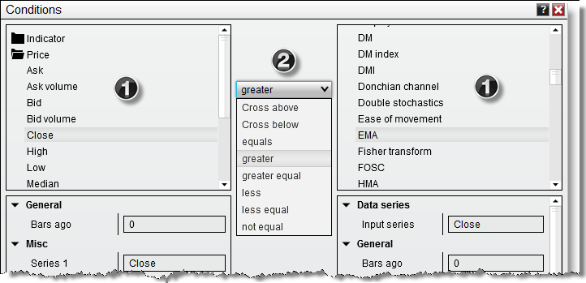
1. Available items such as indicators, price data, etc. to use for the comparison 2. List of relational operators
Relational operator invalid comparisonsSince the relational operator will let you select any items from the left to compare to the right in the Condition Builder, you need to be mindful what you attempt comparing. For example comparing a price based value like the DEMA indicator value to the Misc category Falling would not be possible, and prompt the Condition Builder to issue an error like shown below -
"Type of left expression and right expression do not match, please select similar expressions"
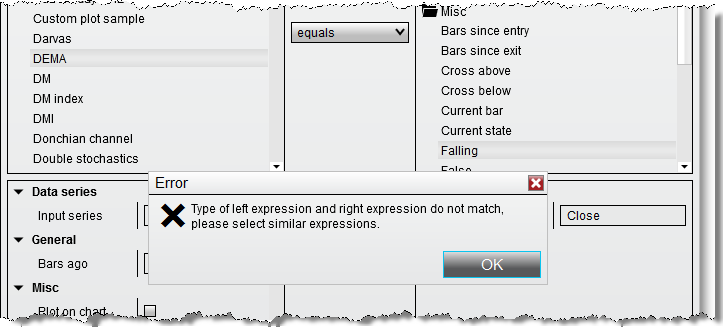
To work around, you would need to select expressions with a similar return value that would allow for a programmatic comparison. In the example used above, the DEMA indicator provides a double value in return that is attempted to be compared to a boolean (true / false) value, which Falling would return.
The correct approach is shown below, the DEMA indicator would be passed into Falling as input series and then the return value could be compared to True from the Misc category to create a successful condition.
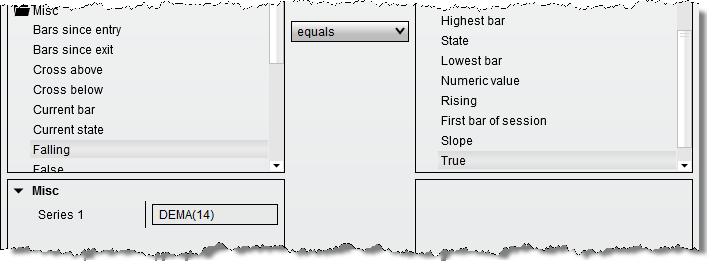 |
 How to make price data comparisons
How to make price data comparisons
Price Data ComparisonsYou can compare a bar's price data such as checking for a higher close. The following is an example and represents one of many possible combinations.
1. Expand the Price category on the left side and select the Close. 2. Expand the Price category on the right side and select the Close. 3. Select the greater relational operator 4. Set the Bars ago parameter to a value of "1"
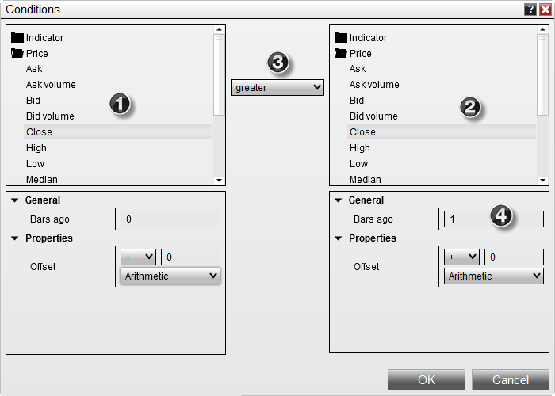 Once the OK button is pressed, a condition is created that would translate to the following:
"Current closing price is greater than the closing price of 1 bar ago" |
Offsetting an Item ValueYou can offset the value of most items available in the Condition Builder. An offset is a value that is added, subtracted, multiplied or divided from / into the actual item's value. When an item is selected such as an indicator or price data, the Offset and Offset type parameters become visible in the window directly below the item selected. This is shown as numbers 5 and 6 in the image below.
Offset type can be set to:
Once the Offset type is selected, you must set the value Offset. In addition to the example below, you can see the "Checking for Volume Expansion" section below for another example that uses the Percent Offset type.
The following is an example and represents one of many possible combinations:
1. Expand the Price category and select the Close 2. Expand the Price category and select the High 3. Select the greater relational operator 4. Set the Bars ago parameter to a value of "1" 5. Set the Offset type parameter to Ticks 6. Set the Offset parameter to a value of "1"
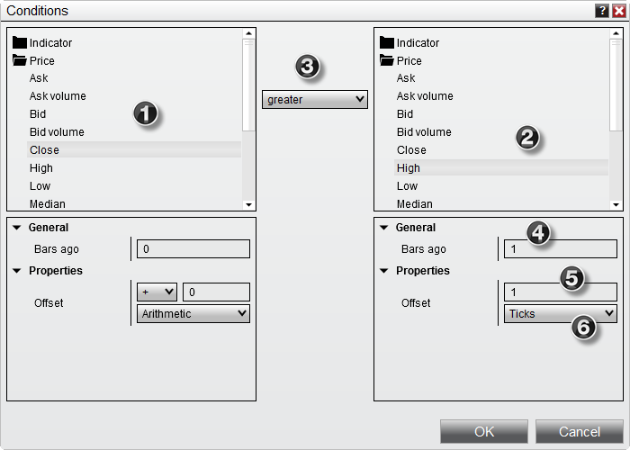
Once the OK button is pressed, a condition is created that would translate to the following:
"Current closing price is greater than the high price of 1 bar ago + 1 tick" |
 How to make indicator to value comparisons
How to make indicator to value comparisons
Indicator to Value comparisonsYou can compare an indicator's value to a numeric value. This can come in handy if you wanted to check if ADX is over a value of 30 (trending) or if Stochastics is under a value of 20 (oversold) or any other conditions you can think of.
The following is an example and represents one of many possible combinations:
1. Expand the Indicator category and select the ADX indicator 2. Set the parameters of the indicator, for our example with the default values no changes are needed 3. Expand the Misc category and select Numeric value 4. Select the greater relational operator 5. Enter the numeric value you want to compare the indicator to (30 in our example)
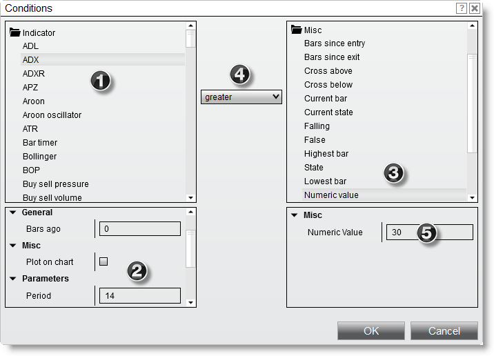 Once the OK button is pressed, a condition is created that would translate to the following:
"Current value of a 14 period ADX is greater than 30" |
 How to compare plot values of multi-plot indicators
How to compare plot values of multi-plot indicators
Comparing Plot Values of Multi-Plot indicatorsYou can compare plots in the same indicator or select any individual plot within an indicator to create a condition.
The following is an example and represents one of many possible combinations:
1. Expand the Indicator category and select the Stochastics indicator 2. Set the indicator input parameters and select the K plot (green arrow) 3. Expand the Indicator category and select the Stochastics indicator 4. Select the greater relational operator 5. Set the indicator input parameters and select the D plot (green arrow)
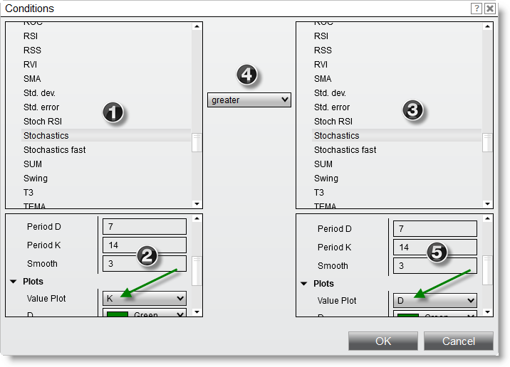
Once the OK button is pressed, a condition is created that would translate to the following:
"Current K plot value of a Stochastics indicator is greater than the current D plot value of the same Stochastics indicator" |
 How to use user inputs & variables
How to use user inputs & variables
User Inputs & VariablesUser inputs are simply variables that can be used in place of absolute values. They increase the flexibility of your strategy since you can substitute a variable for the period parameter of a simple moving average instead of provide an absolute value.
SMA(9) is how you express a 9 period simple moving average in NinjaScript. If you run a strategy, you would always be using a 9 period simple moving average. At run time, you might want to change this value to 10. User defined inputs accomplish this. If you created an input named "MyInput", you could express the simple moving average as SMA(MyInput). At run time, you can then configure your strategy by setting the value of "MyInput" to whatever value you like. In addition, user inputs are required when optimizing a strategy.
User variables (not to be confused with inputs) behave in the same manner with the exception that they can not be configured when starting a strategy but can only be set programmatically during run time.
•User inputs are created from the Builder screen •User variables can be set in the strategy logic through the Condition Builder (see the sections above)
The following is an example and represents one of many possible combinations, the example demonstrates the use of a user input however the sample approach applies to user variables.
1. Expand the Price category and select the Close. 2. Expand the Indicator category and select the SMA indicator 3. Select the greater relational operator 4. Set the Period parameter to a user defined input by pressing the "Set" button (green arrow) to open the Value window
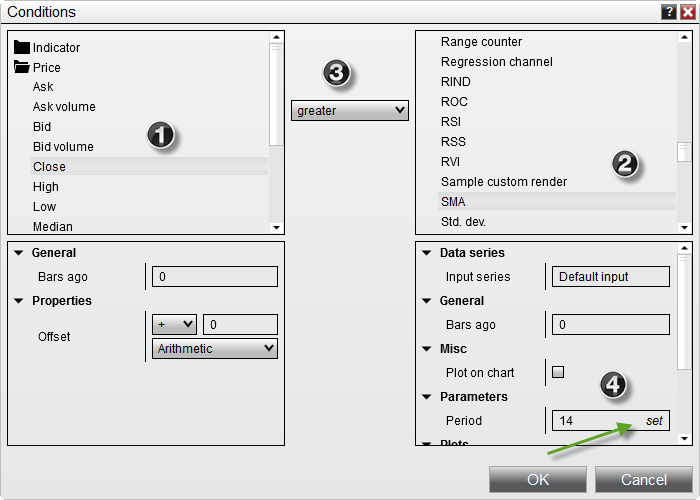
5. Expand the User input category and select the value MAPeriod and press the OK button
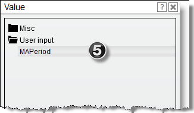
6. The Condition Builder will now look as per the image below with the user input "MAPeriod" assigned to the parameter Period. When you apply this strategy to a chart, you will be able to set the value for the user input directly from the UI which will then be used to drive the SMA indicator.
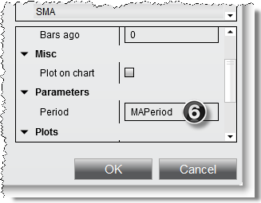
Once the OK button is pressed, a condition is created that would translate to the following:
"Current closing price is greater than the user defined Period simple moving average" |
 How to create a cross over condition
How to create a cross over condition
Cross Over ConditionsYou can check for either a CrossAbove or CrossBelow condition with a user defined look back period. The look back period sets the number of bars to look back to check for the cross over condition.
The following is an example and represents one of many possible combinations.
1. Expand the Indicator category and select the EMA indicator 2. Set the Period parameter to the desired value ("9" is used in this example) 3. Expand the Indicator category and select the EMA indicator 4. Set the Period parameter to the desired value ("20" is used in this example) 5. Select CrossAbove relational operator 6. Set the Look back period
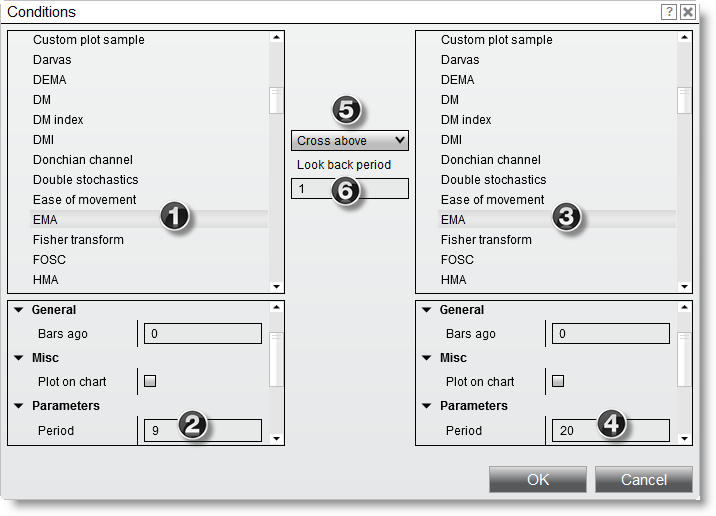
Once the OK button is pressed, a condition is created that would translate to the following:
"9 period exponential moving average crosses above the 20 period exponential moving average in the last bar" |
 How to use indicator inputs in other indicators
How to use indicator inputs in other indicators
Indicator on IndicatorYou can use indicators as input for other indicators ... actually, you can nest indicators within indicators infinitely if you really wanted to!
The following example is an example of applying a simple moving average (SMA) to a 14 period ADX indicator and is one of many possible combinations.
1. Expand the Indicator category and select the SMA indicator 2. Set Input series to the ADX indicator by pressing the "Edit Input" button to open the Value window 3. Select the ADX indicator and set any properties in the Parameters window
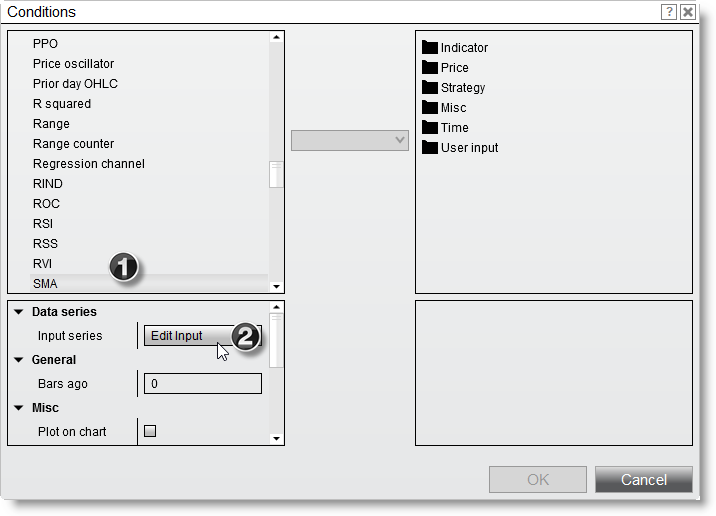
3. Select the ADX indicator and set any properties in the Properties window 4. Press the OK button
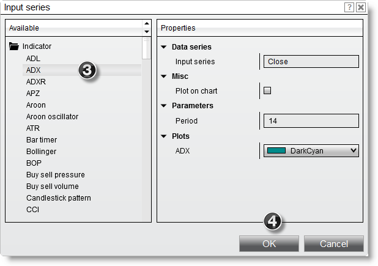
5. Once you have pressed the OK button, you will notice on the left lower window, the "Input series" parameters has now been set to the ADX(14) which is the 14 period ADX indicator.
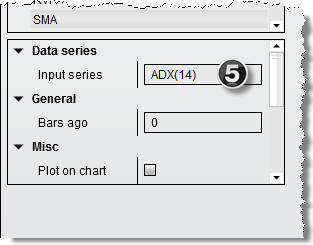 |
 How to check for volume expansion
How to check for volume expansion
Checking for Volume ExpansionYou can compare if the current bar's volume is greater than the prior bar's volume plus an offset amount.
The following is an example and represents one of many possible combinations.
1. Expand the Indicator category and select the VOL indicator 2. Expand the Indicator category and select the VOL indicator 3. Select the greater than or equal relational operator 4. Set the Bars ago parameter to a value of "1" 5. Set Offset type parameter to Percent 6. Set the Offset parameter to a value of "3" - 3 equals 300% percent here, i.e. 10% would be 0.1
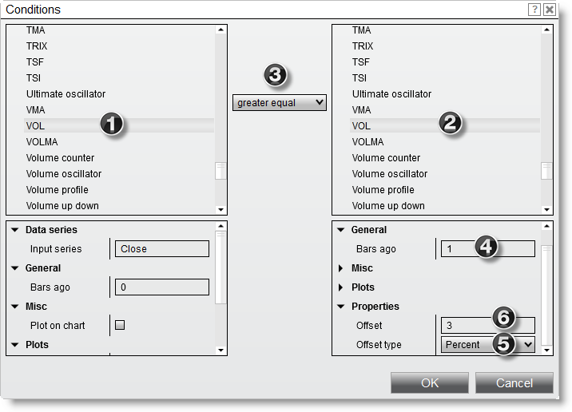
Once the OK button is pressed, a condition is created that would translate to the following:
"Current value of Volume is greater than or equal to the value of Volume of 1 bar ago + 300%" |
 How to create market position comparisons
How to create market position comparisons
Creating Market Position ComparisonsYou can compare strategy state information such as but not limited to current market position or current position size.
The following is an example and represents one of many possible combinations.
1. Expand the Strategy category and select Current market position. 2. Expand the Strategy category and select Market position 3. Select the equals to relational operator 4. Select Flat from the Market position drop-down under Misc
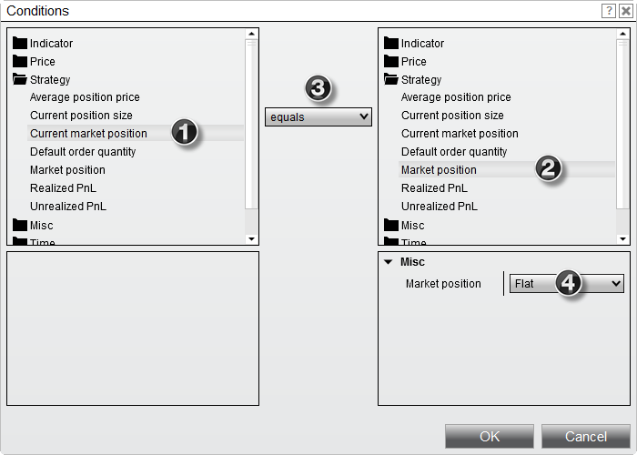
Once the OK button is pressed, a condition is created that would translate to the following:
"Current market position equals flat" |
 How to create time comparisons
How to create time comparisons
Creating Time ComparisonsYou can compare a bar's time data to a user defined time or date value.
The following is an example and represents one of many possible combinations.
Note: Time series represents a collection of bar Date / Time values of a bar series
1. Expand the Time category and select Time series 2. Expand the Time category and select Time series 3. Select the greater than or equal relational operator 4. Set the Time parameter to a user defined value of "10:00"
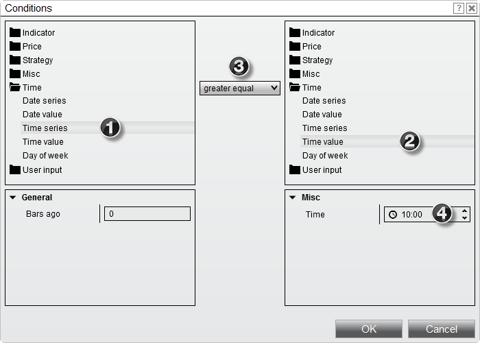
Once the OK button is pressed, a condition is created that would translate to the following:
"Current bar's time is greater or equal to 10:00 AM" |
Negating a ConditionYou can also negate a condition, so allowing for example to have a certain filter or technical indicator setup being the opposite and evaluate to false.
The following is an example and represents one of many possible combinations.
1. Expand the Misc category and select the Cross above 2. Click the Series 1 input field and select the DEMA indicator as series for the cross comparison to use 3. Expand the Misc category and select the False 4. Select the equals relational operator
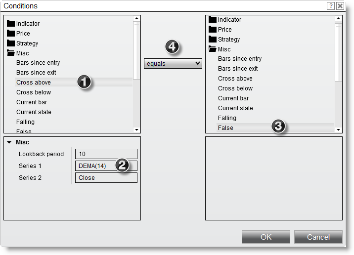
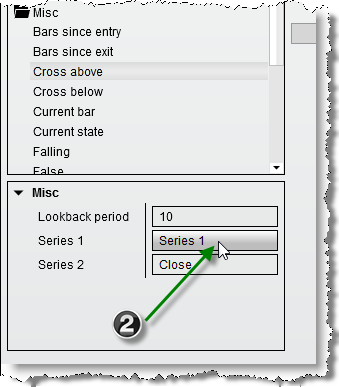
Once the OK button is pressed, a condition is created that would translate to the following:
"The DEMA(14) indicator has not been crossed by the Close price within the last 10 bars" |
Creating a Time FilterTime filters can be a useful tool of your custom strategy to help make its trades more efficient and devise a way to test for various parts of the trading session. The Condition Group Editor is ideally suited to set those up for your Strategy Builder scripts.
The following is an example and represents one of many possible combinations (as well as the actual time filter times below) :
1. Press the group icon on the Conditions and Actions screen to open the Condition Group Editor
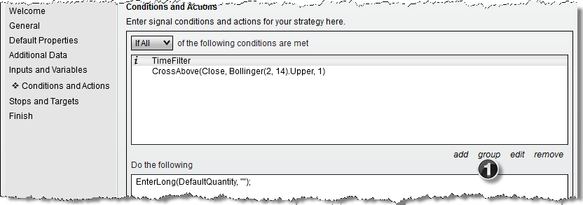
2. Optionally set a custom name for your Condition Group, i.e. Time Filter. 3. Selects if all of the individual conditions in the group have to be met in order to allow for a 'true' result evaluation, or if any will be sufficient. 4. Press add, edit or remove to add new condition into the group or manage existing ones.
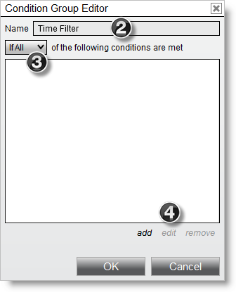
5. Add a new condition in and expand the Time category and select Time series 6. Expand the Time category and select Time value 7. Enter your desired Time under Misc for the start of the time filter, i.e. 9:31 8. Select the greater equal relational operator
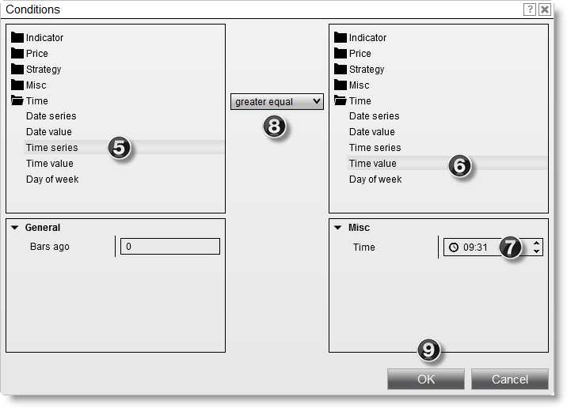
9. Press the OK button then to return to the Condition Group Editor with your first filter condition created.
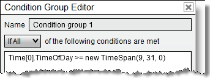
Having setup the second, opposing condition as well the Condition Group for the time filter could look like :
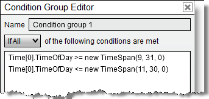
Press OK now in the Condition Group Editor to exit out of it and return to the Conditions and Actions screen to setup other criteria, such as your trade entry as well as the resulting actions to take.
The time filter created would translate to :
"Allow this condition group to be true only if the Time of day is greater or equal to 9:31 AM and less or equal to 11:30 AM" |